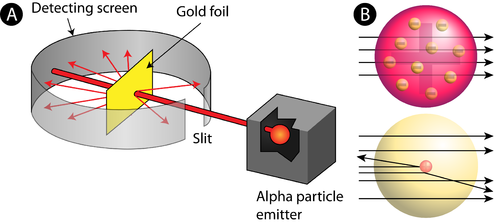
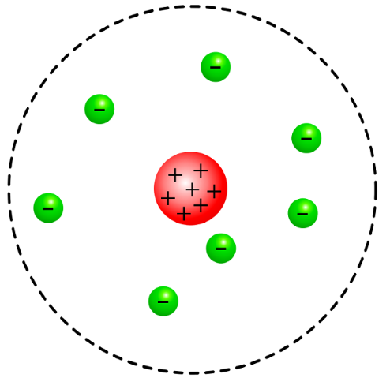

Rutherford's Experiment involved firing a stream of tiny positively charged particles at a thin sheet of gold foil (2000 atoms thick).
Rutherford reasoned that all of an atom's positively charged particles were contained in the nucleus. The negatively charged particles were scattered outside the nucleus around the atom's edge.
After we have:Niels Bohr.